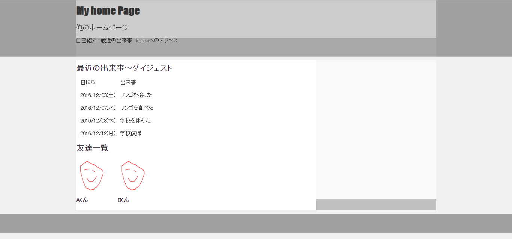

すいません。 今回ちょっとjavascriptが終わりませんでした。 来週までにjavascript書き終える予定なのでそれまでお待ちいただけると・・・助かります・・・
第一回Ruby on Rails講習
今回はHTML&CSS, javascriptの基本をやるのでvagrant, VirtualBoxは使いません。 Sublime Textを使っていきます。それぞれの概要について
- HTML ・・・ HyperTextMarkupLanguageの略。WEBサイトの見た目(主に構造)を作るためのマークアップ言語。おそらくみなさん授業でやったと思うのでこれはそんなに学習に困らないと思います。
- CSS ・・・ Cascading Style Sheetsの略。 HTMLで作った構造に対して背景色や文字の大きさなどの詳細(プロパティと言います。 これからこの言葉を使っていくので覚えましょう)を決めていくための言語。
- javascript ・・・ プログラミング言語の一つ。なおJavaとは全く違う言語なので要注意！ ChromeやFirefoxなどのWEBブラウザで実行できるのですごい便利。 実はjavascriptさえ極めれば各種フレームワークを使うことによって、iOS&Androidアプリ開発(ただし速度はお察し)や第二回以降学んでいくRubyが担う処理(サーバサイドの記述)も出来ちゃったりする。
今回の講習では以上の事柄をやっていきます。 ただし本講習でやったことでHTMLやCSSをマスターできるわけではないので基礎を学んだあとは自分でWEBサイトを作って腕を磨いていきましょう
HTML~導入
下の画像はRuby on Rails講習のWEBサイトの画像です。
このようにWEBサイトは箱(これを「要素」と呼びます。)と文字から構成されており、HTMLで要素と文字を、CSSで要素の背景色等のプロパティを設定していきます。
ざっくり理解したところで実際にHTMLとCSSを使って適当なページを作ってみましょう
Sublime Textを起動した後、「Ctrl-o」を押すと以下のようなファイル選択画面が開きます。
まずHTMLはC言語でいう#include <stdio.h> とか int main(void)的な感じのいわゆるおまじないが存在します。
それが以下のコードです。
<!DOCTYPE html>
<html>
<head>
Sample Page
</head>
<body>
</body>
</html>
- <!DOCTYPE html> ・・・ これはHTMLの文法ですよ、という宣言 しないと場合によっては見た目が崩れたりするので必ず宣言しましょう。
- <meta charset="UTF-8">・・・ meta要素は文書に関する情報を指定するときに使う要素です。 今回はこのファイルの文字コードはUTF-8ですよ、という宣言をしています。
これも宣言しないと文字化けしたりするので注意 - <!-- コメントアウト --> ・・・ CやJavaなどのコメントアウトとだいぶ違うので注意！ ただしこれはHTMLの場合なのでCSSは/* */でコメントアウトができます。
- htmlは対応する要素のタグ( <html> や <title> など)で表示したい内容を挟んで文書を作っていきます。 例えば大きい文字を表示したいときは<h1>タグ, 一つの段落として表示したいときは<p>タグで挟むなどです。
それではITの定番Hello World行きましょう。
Sublime textを立ち上げ
今回は大したことはやらないので後ですぐ消せるように「デスクトップ」ディレクトリに「sample.html」というファイルを作りましょう。
開いたら以下のコードを打ち込んでください。
<!DOCTYPE html>
<html>
<head>
sample html
</head>
<body>
Hello World!
Hello World!
Hello World!
Hello World!
Hello World!
Hello World!
Hello World!
</body>
</html>
打ち込んだらsample.htmlをChromeで開いてみましょう。 おそらく以下のようになってると思います。
上のコードのタグの説明です。
- <html>: html文書の始まりと終わりを表すタグ
- <head> : HTML文書の情報を記述するもの。 ここに書かれたコードをブラウザに表示されません。
- <body> : HTMLを記述していきます。 ここに記述されたものがブラウザに表示されます。
- <h1>, <h2>, <h3>, <h4>, <h5>, <h6> : 文字を表示するタグです。 1, 2, 3, ...の順に文字の大きさが小さくなっていきます。
- <p> : 段落を表すタグ。 htmlはタグを使わずそのまま文書を打つと改行がされないのですが、これを使うと</p>タグで改行されます。 さらに上下左右にちょっと余白を作ってくれるのですこしキレイにもなります。
一つの段落を定義したいときに使うといいでしょう。
他にも
- <a> : 他のページのリンクを表すタグ
Koken Link

などがあります。 タグの<a>の後のsrc=""やaltなどを属性といいます。 覚えておきましょう。 またこれらのタグも非常に重要なのでぜひ覚えていきましょう。
HTML,CSSのコツ
HTMLが何なのか、ということをざっくり理解したところで次はどうやってHTML文書を作っていくかということをやっていきます。
まずみなさんは以下の3つのポイントを覚えて下さい。
- HTMLは左上に重力がある積み木のようなものである。
- 積み木はそれぞれCSSのプロパティ設定によって色が変わったり縦横の長さが変わったりする。
- 積み木は入れ子構造である。
それではこれらを具体例を交えて説明します。
まずは以下のコードを見てください。 class属性はその要素に対してクラス名を与えるものです。 よくわからない場合はある要素に名前を付ける属性である、と覚えておきましょう。
sample.html
<!DOCTYPE html>
<html>
<head>
Sample div tag
</head>
<body>
</body>
</html>
このまま表示しても装飾をしていないため、ブラウザには何も表示されません。 今は「box-1 box-2 box-3クラスの要素の実体は存在するが目に見えない状態」です。
そこでCSSの出番です。 まずCSSの文法について少し触れていきます。
セレクタ {
width: 40px;
height: 40px;
font-size: 10px;
font-family: sans-serif;
/* width, heightなどをプロパティといいCSSはプロパティを設定していく言語である。
width, height以外にも,ものすごいたくさんのプロパティが存在するがここでは挙げきれないので省略します。(量が多すぎて私も一部しか覚えていません。)*/
}
「セレクタ」の部分には場合によって違うものが入ります。具体例で示していくと
- 標準で用意されているタグの場合(h1, h2, p など)
h1 { /* このように指定する要素に何もつけずそのまま打ち込む */
font-size: 20px;
font-family: sans-serif;
}
div {
height: 10px;
}
.box-1 { /* 指定するクラス名の前に.(ドット)をつける */
width: 100px;
}
#box-id { /* 指定するid名の前に#をつける */
width: 100px;
}
文法はざっくりやったので必要だったりわからないプロパティが出てきたら適宜調べていきましょう。
以下のようにCSSでそれぞれの要素にプロパティを設定していけば実体が目に見えるようになります。
.box-1 {
width: 100px;
height: 100px;
background-color: red;
opacity: 0.5;
}
.box-2 {
width: 150px;
height: 150px;
background-color: green;
opacity: 0.5;
}
.box-3 {
width: 200px;
height: 200px;
background-color: blue;
opacity: 0.5;
}
このCSSを読み込んだ状態でsample.htmlファイルをブラウザで開くと以下のような状態になっていると思います。
画像からもわかる通り左上に重力がかかっているようにbox-1, box-2, box-3が積まれているのがわかります。
これらの要素はブロック要素と呼ばれます。 重要な単語なので覚えておきましょう。(もう少し詳しい解説は後ほど)
また下の画像のように要素の中に文字を入れると、文字は箱の中いっぱいに広がります。
<!DOCTYPE html>
<html>
<head>
Sample div tag
</head>
<body>
box-1 box-1 box-1 box-1
aaaaaaaaaaaaaaaaaaaaaaaaaaaaaaaaaaaaaaaaaaaaaaaaaaaaaaaaaaaaaaaaaaaaaaaaaaaaaaaaaaaaaaaaaaaa
</body>
</html>
また要素の中に要素を入れて入れ子構造にすることもできます。 外側の要素を「親要素」、内側の要素を「子要素」と呼びます。 これは覚えておきましょう。
<!DOCTYPE html>
<html>
<head>
Sample div tag
</head>
<body>
</body>
</html>
私たちがよく目にするWEBサイトは、先ほど紹介した
- HTMLは左上に重力がある積み木のようなものである。
- 積み木はそれぞれCSSのプロパティ設定によって色が変わったり縦横の長さが変わったりする。
- 積み木は入れ子構造である。
に沿って作られています。 以下のkoken HomePageもその規則に従って作られています。
次はブロック要素とインライン要素というものについてやっていきます。
ブロック要素、インライン要素
- ブロック要素 ・・・ 要素を「一つのブロック」として扱います。基本的には先ほどやったようにCSSで高さと横幅を設定していきます。 CSSで特殊な設定をしない限り、要素の上下に改行が入ります。ブロック要素の代表的なものとして<div>があります。 箱と覚えるといいでしょう。
<!DOCTYPE html>
<html>
<head>
Sample div tag
</head>
<body>
string string string block要素 string string string
</body>
</html>
<!DOCTYPE html>
<html>
<head>
Sample div tag
</head>
<body>
string string string inline要素 string string string
</body>
</html>
実際にWEBサイトをHTML&CSSで作ってみよう
実際にWEBページを作っていきましょう。 デスクトップにディレクトリを作りましょう。 名前は「Homepage」とします。
Sublime Textで「Ctrl-o」を押しHomepage内にindex.htmlとstyle.cssを作ります。
まずはHTMLのお約束を書いていきましょう。
index.html
<!DOCTYPE html>
<html>
<head>
My home page
</head>
<body>
</body>
</html>
style.css
body {
background-color: #f0f0f0; /* RGB code で表せる */
font-size: 14px;
color: #333; /* RGB code */
margin: 0 auto;
}
h1, h2, h3, h4, h5, h6, p {
padding: 10px 0;
margin: 0;
}
今回CSSでh1, h2, pなどの標準で用意されている要素に対してプロパティを設定しています。 これはブラウザによって独自のCSS設定が存在するため、ほかのブラウザで開くと予期しない見た目になってしまうのを防ぐためにそのデフォルトのCSSを上書きするCSSを書いているのです。 これを「リセットCSS」と呼びます。
header, footer
- header ・・・ 上に位置するもの(ヘッダー)を表す要素として使える。ブロック要素
- footer ・・・ 下に位置するもの(フッター)を表す要素として使える。ブロック要素
header, footerをindex.htmlに追加しましょう。
<body>
続いてWEBサイトのコンテンツを作っていきましょう。 コンテンツに限らず一つの塊となっている情報を定義したいときはdivタグを使います。
※なぜdivタグを使うのか・・・？
divは「特定の意味がない」「ブロック要素」なのでプロパティをうまく設定すれば汎用的に様々な用途で使うことができるからです。spanだとinline要素であり、要素を一つの情報の塊として扱うのが無理(無理やりやればできないこともないけど・・・)なのでこれからはどんどんdivを使っていきましょう。
divタグを使いコンテンツの外側の枠の要素を定義しましょう。
あとでCSSを設定していくのでcontentsというclassをつけます。
次に今のままだとブラウザ上で何も見えないのでCSSでブロック要素に対してプロパティを設定していきます。
style.css
header {
height: 100px;
background-color: #a0a0a0;
}
.contents {
height: 400px;
width: 800px;
background-color: #c0c0c0;
}
footer {
height: 50px;
background-color: #a0a0a0;
}
contentsが左に寄ってしまっていますがこれも後で真ん中に来るようにします。
contents, headingの中の子要素も作っていきましょう。
今追加した子要素のプロパティも設定していきましょう。
style.css
header {
background-color: #a0a0a0;
}
.heading {
height: 100px;
width: 960px;
background-color: #cccccc;
}
.navbar {
height: 50px;
width: 960px;
background-color: #a9a9a9;
}
.contents {
height: 400px;
width: 960px;
background-color: #c0c0c0;
}
.left-content {
height: 400px;
width: 640px;
background-color: white;
}
.right-content {
height: 370px;
width: 320px;
background-color: #f9f9f9;
}
上の画像から見てわかる通りブロック要素は幅も大きさも指定がなければ子要素の分だけ広がります。
今回は子要素の分だけheader, contentsに広がってほしかったのでheightを消しました。
この画像を見てもわかるのですがleft-content, right-contentが横並びになっていません。
望ましい結果としてはcontentの中でleft-contentが左側に、right-contentが右側になっている状態です。
ではこれからそれをやっていきましょう。
float プロパティ
floatプロパティとは指定された要素を左、または右に重力をかけるように寄せて配置するときに使います。
それではfloatを使って、right-contentをleft-contentの右側に配置するように設定しましょう。
style.css
.left-content {
height: 400px;
width: 640px;
background-color: white;
float: left;
}
.right-content {
height: 370px;
width: 320px;
background-color: #f9f9f9;
float: left;
}
left-contentとright-contentを横並びさせることに成功！！・・・とおもいきや今度はfooterがなくなってしまいました。
これはcontentsが消えてfooterが上に上がってleft-content, right-contentの裏に隠れてしまっているのですね。
これに関して理解するためにはfloatがどんなものなのかを理解しなければなりません。
例えば以下のコードをブラウザで開いたとしましょう
index.html
<!DOCTYPE html>
<html>
<head>
sample html
</head>
<body>
</body>
</html>
style.css
.super-box {
background-color: yellow;
width: 80px;
padding: 8px; /* 余白をいれるためのプロパティ */
}
.son-box1 {
background-color: red;
width: 40px;
height: 50px;
}
.son-box2 {
background-color: green;
width: 40px;
height: 100px;
}
.son-box3 {
background-color: blue;
width: 40px;
height: 20px;
}
すべてブロック要素ですから上のようになるのは容易に想像できると思います。
ではson-box3クラスにfloat: left;というプロパティを設定するとどうなるでしょう。 下のようになります。
黄色の箱super-boxは親要素で、heightを設定していないので 子要素son-box1, son-box2, son-box3の分だけ高さが増えるはずなのですがson-box3だけ仲間外れにされているような感じになっちゃってます。
これはfloatプロパティの特性なのです。 float: left rightに限らずfloatが設定された要素は文字通りあたかも浮いたような 感じになってしまいほかの要素から認識されなくなってしまうのです。
確かにこういうのが必要な場面があるのかもしれないですが少なくとも今はこの性質は厄介ですね。
ですがこの問題を解決する「clearfix」という手法があるのです。
clearfix
疑似要素の:afterを使ってfloatの他の要素が回り込んでしまう現象を解決するための手法です。
疑似要素とは条件によって適用させるかどうかを変化させるできる要素のことです。
a {
background-color: red;
}
a:hover{
background-color: blue;
}
例えば上記のコードだとa要素にマウスポインターが重なったときに青色に変化します。
疑似要素を大体理解したところでclearfixをやっていきましょう。
style.cssに以下のコードを追加してください。
.clearfix:after {
content: "";
clear: both;
display: block;
}
- content ・・・ 疑似要素:afterによって作成された要素の中の文字を指定するプロパティ
- clear ・・・ floatによってなくなる要素の高さ(さっきの例として挙げた画像でいう親要素の黄色ブロックの高さのこと)を正常に戻してくれるプロパティ 値はbothとすることが多い。
- display ・・・ 要素の種類を変更することができるプロパティ、 今回はblock要素を扱うのでもちろんblockを指定
プロパティについて
それではhtmlにclearfixを適用させましょう。 contentsクラスに clearfixを追加します。
left-content, right-contentを思い通りに横並びにすることができました。
次にpadddingとmarginというものについてやりたいのですがいろいろ説明するための画像作ったりするのが大変なので 「Scene-live」様のサイトを見ていただければと思います。
超重要事項なのでよくわからないまま適当に済ませるのは非常にまずいです。 あまり具体的なイメージがわかないなぁと思ったらすぐにTAに聞きましょう。
リンク
各要素を中央寄せにしよう
HTMLの定番と言っても過言ではない中央寄せです。
今現状としてはheaderの中身とcontentsが左に寄ってしまっているのでこれを中央寄せにしましょう。
style.cssの.heading, .navbar, .contentsに「margin: 0 auto;」を追加します。
.heading {
margin: 0 auto;
height: 100px;
width: 960px;
background-color: #cccccc;
}
.navbar {
margin: 0 auto;
height: 50px;
width: 960px;
background-color: #a9a9a9;
}
.contents {
margin: 10px auto;
width: 960px;
background-color: #c0c0c0;
}
これで要素が真ん中に寄ったことによって作ろうとしてたサイトの骨格ができましたね。
骨格ができたところで中身を作っていきましょう。
index.html
<body>
My home Page
俺のホームページ
</body>
style.css
.heading {
height: 100px;
width: 960px;
background-color: #cccccc;
margin: 0 auto;
}
.title {
font-family: fantasy; /* フォントの種類を設定するプロパティ */
}
.heading-sentence {
font-size: 18px;
}
header部分が書き終わりました。
次にナビゲーションバーを作っていきましょう。
まずここで使うタグについての学習です。
- <ul> ・・・ 順序のないリストを示すブロック要素。 li要素と組み合わせて使う(unordered list)
- <ol> ・・・ 番号がついたリストを示すブロック要素。 li要素と組み合わせて使う(ordered list)
- <li> ・・・ リストの項目を示すブロック要素
それではindex.htmlのnavbarにリストを追加しましょう。
My home Page
俺のホームページ
navbarにリストが入りました。 ul要素の中のli要素一つ一つについている点が邪魔なのでそれを消します。
またfloatを使ってli要素を横並びかつ左寄せにしましょう
.clearfix:after {
content: "";
clear: both;
display: block;
}
ul {
margin: 0;
padding: 0;
list-style: none; /* li要素の先頭のマークを変えることができるプロパティ*/
}
ul li {
margin: 0;
float: left;
padding-right: 10px;
}
ここでleft-contentの中身を書いていきます。 もう少し詳しくleft-contentを見てみましょう。
left-contentの中にさらに二つのブロック要素が入っています。
まずは最近の出来事～ダイジェスト から作り上げて行こうと思うのですがその前にtable要素についてさらっとやりましょう。
- table : 表を作成するブロック要素
- th : 票の見出しを作成するブロック要素
- tr : 表の行を作成するブロック要素
- td : 表の中身のブロック要素
table要素を使ってコンテンツを作っていきましょう。
最近の出来事～ダイジェスト
日にち 出来事 2016/12/03(土) リンゴを拾った 2016/12/04(日) バナナを拾った 2016/12/07(水) リンゴを食べた 2016/12/08(木) 学校を休んだ 2016/12/12(月) 学校復帰
このままだと表が窮屈に見えるので整理しましょう。
td {
margin: 0;
padding-left: 10px;
line-height: 30px;
}
これで少し表がきれいになりましたね。
次に友達一覧を作りましょう。
index.html
最近の出来事～ダイジェスト
日にち 出来事 2016/12/03(土) リンゴを拾った 2016/12/07(水) リンゴを食べた 2016/12/08(木) 学校を休んだ 2016/12/12(月) 学校復帰 友達一覧

Aくん
Bくん
style.css
.friends-img {
width: 100px;
height: 100px;
}

次に右側の中の提出フォームを作りましょう。
Contact us

footerの中身を書きます。
index.html
style.css
footer {
height: 50px;
/*background-color: #a0a0a0;*/
text-align: center;
}
ブロック要素を具体的に見やすくするためにそれぞれの背景色を設定していましたがこれも解除しましょう。
これにてホームページの完成です。
今回はキレイなウェブページを作ったわけではありませんがこれでブロック要素の扱い方がわかったと思います。
また、当たり前ですが一回やっただけだと覚えられないので何回も復習しましょう。